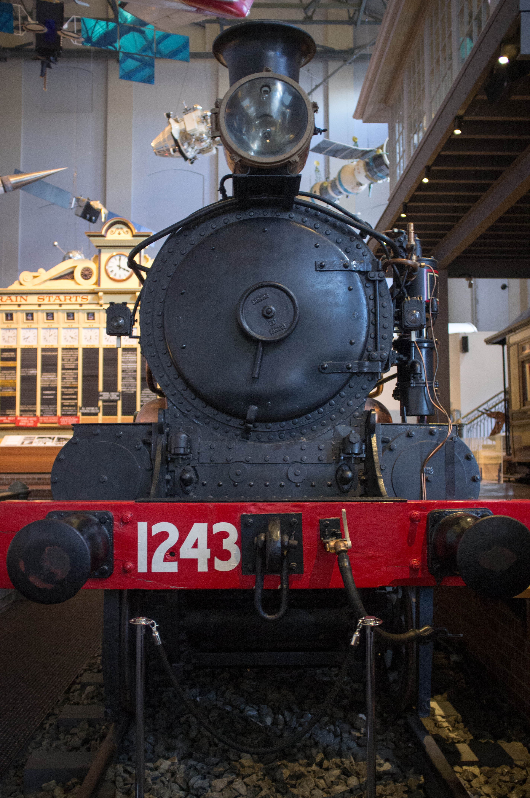

Buildings
Behind the Bricks
The stories behind the physical landscape, both previous and existing, that make up Ultimo
The Powerhouse
The Ultimo Power Station (commonly known as the Powerhouse) was built in 1902. Its original purpose was to provide electricity to Sydney’s trams, which it did until Sydney's tram network was closed in 1961.
The Powerhouse was left untended for sixteen years. In 1979, the NSW Government arranged for it to become the new home of the Museum of Applied Arts and Sciences, which had been desperately searching for a headquarters capable of housing its collection. With a little architectural redesign by Lionel Glendenning, the building was soon able to open to the public. The old tram sheds next to the main building were the first section to open in 1981, followed by the official opening of the Powerhouse Museum in March 1988.
The Powerhouse has always been an iconic Sydney building, but as a museum it has become a beloved community space and a popular family attraction. Some of the most significant permanent exhibitions include the Transport exhibition (featuring Locomotive 1243, the oldest contractor-built locomotive in Australia), the Space exhibition, and the Experimentations exhibition (an interactive science exhibition). Some of these exhibitions boast attractions, like the chocolate machine, which have remained popular for generations.
As of 2016, the NSW Government is planning to move the Museum of Applied Arts and Sciences from the Powerhouse to Parramatta. This has caused a lot of controversy, and prompted an official NSW Upper House Inquiry into museums and galleries. Inner city residents feel protective of the beloved Powerhouse Museum, which has sparked a cultural feud between eastern and western Sydney.
Central Station
Central was the first railway station to be built in Sydney, in 1855. It was originally called 'Redfern', and sat to the south of Devonshire St. As the traffic became too heavy, the station had to be relocated to the north of Devonshire St so more platforms could be added.
The station was built where the Devonshire St Cemetery once sat. The bodies interred in the cemetery had to be exhumed and relocated to different cemeteries around Sydney. Eventually, Central Station was officially opened on 4 August 1906.
Work on the famous Central clock tower began in 1915, and was completed in 1921.
In 1982, the station's indicator board was replaced with computer screens. The original 1906 indicator board has since been housed in the Powerhouse Museum.